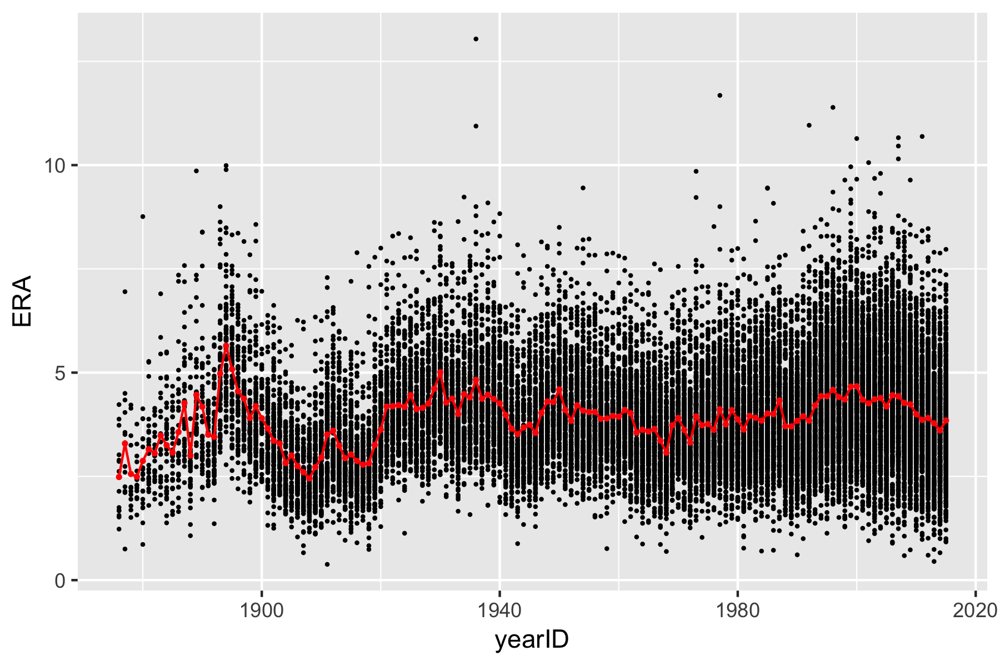
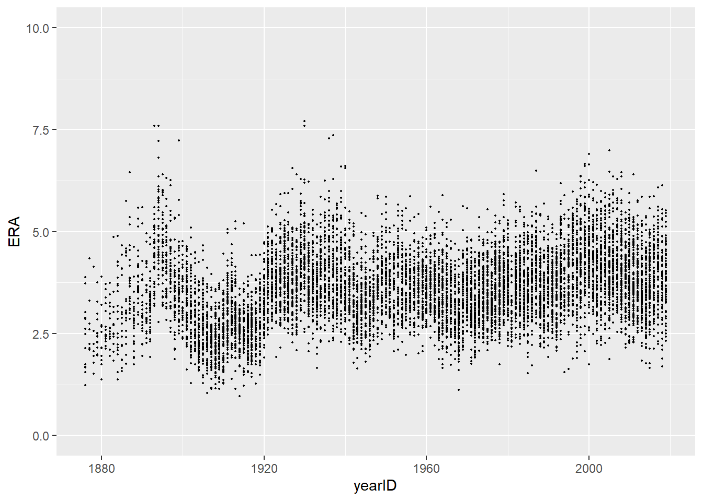
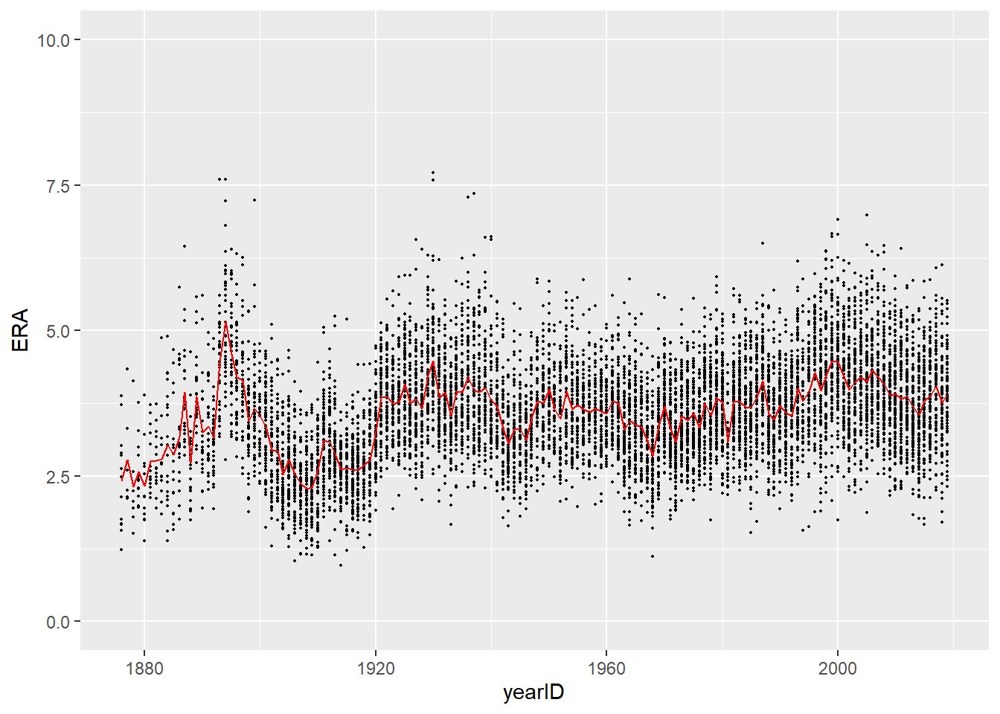

In Prof. Wyner’s lectures, you saw a graph of Earned Run Average (ERA) against year. Also shown was a line connecting the average ERA in each year.

In order to create this figure we need to be able to compute the mean ERA in each year. In Lecture 2, we computed average statistics for a single NBA season in two steps. First, we used filter() to create a new tbl containing only the data from that particular season. Then we used summarize() to compute the desired averages. To compute the mean ERA in each season, we certainly could proceed in a similar way. But this would be incredibly tedious. Luckily there is an easier way in dplyr.
In order to reproduce this image, we will work with the Lahman Baseball Database. As it turns out, there is an R package that includes the entire database (up until the 2016 season). We will load that into R along with the tidyverse packages when we begin our analysis.
Data analysis can usually be described as set of functions or operations being applied to a dataset in sequence. In Problem Set 2, filter() and select() were applied in sequence to the tbl hitting_qualified. Each of these functions takes a tbl as an input and returns a different tbl as an output. More complex data analysis tasks often require sequences of several operations on the dataset. Given what we have learned so far, it would appear that the analyst has two options: (1) save a temporary tbl after each function application and apply the next function to the temporary tbl or (2) “nest” all of the functions together. Below is an example of what these two strategies look like:
> # An Example: Applying func_1(), func_2(), and func_3() sequentially to a tibble named dat.
>
> # Strategy 1
> dat_1 <- func_1(dat)
> dat_2 <- func_2(dat_1)
> dat_final <- func_3(dat_2)
>
> # Strategy 2
> dat_final <- func_3(func_2(func_1(dat)))Both are hard to read and the first strategy is particularly prone to errors as you have introduce several temporary tibbles with the same name plus a numeric suffix – it’s very easy to make mistakes like dat_2 <- func_2(dat) or dat_final <- func_2(dat_2), especially if you are copying-and-pasting lines and then changing suffixes. The second strategy is ugly because we’re generally not used to reading things from inside-out or right-to-left. It becomes especially problematic when each function has many additional arguments.
Luckily there’s another option – the pipe operator %>%. Here is what the same example looks like using the pipe:
Let’s break down what’s happening on the right-hand side of the assignment operator. First, R “pipes” the tbl dat into into the function function func_1(). Then it pipes the result of evaluating func_1(dat) into func_2() and so on and so forth. One way to understand the pipe operator is to think of your analysis as a “pipeline”. The sequence of analysis flow naturally top-to-bottom and puts the emphasis on the actions being carried out by the analyst (i.e. the functions) and the final output rather than a bunch of temporary tbl’s that may not be of much interest.
There are several conventions for formating code when using the pipe. See here and here for much more information and for some advanced “special” pipes.
As mentioned above, we will use data from a baseball data maintained by Sean Lahman. This database contains pitching, hitting, and fielding statistics from Major League Baseball from 1871 to 2016. The data is available as an R package, which we will need to install and load. To install the package, we need to run the following in our console
Once the package is installed, we can load it into R along with the tidyverse packages:
We will focus on pitching statistics today. To load the pitching data into R from the Lahman package, we have to use the data() function. We also will need to convert the data into a tibble.
There are tons of rows and columns in the dataset. For this exercise, we will only want to focus on ERA and also focus only on those pitchers who have pitched at least 150 innings. Unfortuntaely, the Lahman pitching dataset does not contain the number of innings pitched (IP). Instead, it has a column called ``IPouts’’, which is the number of outs pitched and whose formula is \(\text{IPOuts} = 3 \times \text{IP}.\)
Using the pipe and the dplyr verbs we learned in Lecture 2, we will create a new tibble called pitching which contains all players who pitched at least 150 innings, played in either the AL or the NL and which contains only the columns corresponding the player, year, team, league, innings pitched, and ERA.
> pitching <-
+ Pitching %>%
+ mutate(IP = IPouts/3) %>%
+ filter(lgID %in% c('AL', 'NL') & IP >= 150) %>%
+ select(playerID, yearID, teamID, lgID, IP, ERA)
> pitching
# A tibble: 9,528 x 6
playerID yearID teamID lgID IP ERA
<chr> <int> <fct> <fct> <dbl> <dbl>
1 bondto01 1876 HAR NL 408 1.68
2 bordejo01 1876 BSN NL 218. 2.89
3 bradlfo01 1876 BSN NL 173. 2.49
4 bradlge01 1876 SL3 NL 573 1.23
5 cummica01 1876 HAR NL 216 1.67
6 deando01 1876 CN1 NL 263. 3.73
7 devliji01 1876 LS1 NL 622 1.56
8 fishech01 1876 CN1 NL 229. 3.02
9 knighlo01 1876 PHN NL 282 2.62
10 mannija01 1876 BSN NL 197. 2.14
# … with 9,518 more rowsIMPORTANT: Before reading any further, make sure you and your team understand completely what is happening in the code above.
Now that we have ERA for all pitchers eligible for our analysis, we can plot the ERAs by year
> ggplot(data = pitching) +
+ ylim(0, 10) +
+ geom_point(mapping = aes(x = yearID, y = ERA), size = 0.3)
Looking at the plot, it appears that some of the pitchers from the first few decades of baseball had the lowest ERA. Using arrange(), we can see which pitcher had the best season according to ERA.
> arrange(pitching, ERA)
# A tibble: 9,528 x 6
playerID yearID teamID lgID IP ERA
<chr> <int> <fct> <fct> <dbl> <dbl>
1 leonadu01 1914 BOS AL 225. 0.96
2 brownmo01 1906 CHN NL 277. 1.04
3 gibsobo01 1968 SLN NL 305. 1.12
4 mathech01 1909 NY1 NL 275. 1.14
5 johnswa01 1913 WS1 AL 346 1.14
6 pfiesja01 1907 CHN NL 195 1.15
7 jossad01 1908 CLE AL 325 1.16
8 lundgca01 1907 CHN NL 207 1.17
9 alexape01 1915 PHI NL 376. 1.22
10 bradlge01 1876 SL3 NL 573 1.23
# … with 9,518 more rowsIt would appear that the best pitching season of all time was Dutch Leonard’s 1914 season with the Red Sox. The next best was Mordecai Brown’s 1906 season with the Cubs. How much better was Leonard’s 0.96 ERA than Brown’s 1.04 ERA?
To answer this, we can transform ERA to standardized units using the mutate() function. There is a minor complication: there is not a built-in function for standardizing a variable in R! Luckily for us, R allows us to define our own functions like so:
> standardize <- function(x){
+ mu <- mean(x, na.rm = TRUE)
+ sigma <- sd(x, na.rm = TRUE)
+ return( (x - mu)/sigma )
+ }For now, don’t worry too much about the syntax or the na.rm = TRUE bits. We will discuss them in more depth later. Armed with our standardize() function, we can add a column called zERA_all which transforms ERA to the standardized scale.
> pitching <-
+ pitching %>%
+ mutate(zERA_all = standardize(ERA))
> pitching %>% arrange(zERA_all)
# A tibble: 9,528 x 7
playerID yearID teamID lgID IP ERA zERA_all
<chr> <int> <fct> <fct> <dbl> <dbl> <dbl>
1 leonadu01 1914 BOS AL 225. 0.96 -3.01
2 brownmo01 1906 CHN NL 277. 1.04 -2.92
3 gibsobo01 1968 SLN NL 305. 1.12 -2.83
4 mathech01 1909 NY1 NL 275. 1.14 -2.80
5 johnswa01 1913 WS1 AL 346 1.14 -2.80
6 pfiesja01 1907 CHN NL 195 1.15 -2.79
7 jossad01 1908 CLE AL 325 1.16 -2.78
8 lundgca01 1907 CHN NL 207 1.17 -2.77
9 alexape01 1915 PHI NL 376. 1.22 -2.71
10 bradlge01 1876 SL3 NL 573 1.23 -2.70
# … with 9,518 more rowsNow we see that Leonard’s 0.96 ERA was about 3 standard deviations below the overall mean of qualified pitchers, while Brown’s was about 2.91 standard deviations below the mean. On the other hand, the ostensibly worst pitching season was Philadelphia’s own Les Sweetland in 1930. Incidentally enough, Sweetland started that season with a three-hit shutout! Check out this ESPN blog post about the 1930’s Phillies pitching staff.
Of course, you might argue that comparing the raw ERAs across the various years is somewhat unfair. After all, the game as it was played in 1914 is very different to the one played today! As such, it may be more appropriate to standardize all of the ERAs within each season separately. To do this, we will have to compute the mean and standard deviation of ERAs within each season.
Before proceeding, let’s think for a minute about what the following code does:
Very often in a data analysis, instead of performing a calculation on the entire data set, you’ll want to first split the data into smaller subsets, apply the same calculation on every subset, and then combine the results from each subset. For example, in order to replicate the figure above from Prof. Wyner’s lecture, we need to split our pitching dataset based on the year, compute the average ERA within each year, and then combine these into a single tibble.
One strength of dplyr is the ease with which you can follow this “split-apply-combine” paradigm using the function group_by(). We can use this in concert with the pipe as follows
When we print out pitching now, we notice an extra line that tells us the grouping variable. Now when we pass this tibble on to subsequent calculations, these calculations will be done on each group. Recall from earlier that the code pitching %>% summarize(mean = mean(ERA)) returned a single row containing the average of ERA over all players and year. If we now run the same code again, we actually get a tibble with one row per year that lists the mean and standard deviation of ERA within each year. We will save this tibble as pitching_summary:
> pitching_summary <-
+ pitching %>%
+ summarize(mean = mean(ERA), sd = sd(ERA))
`summarise()` ungrouping output (override with `.groups` argument)In Lecture 2, we listed a few useful functions to be used within summarize(). One of them, n(), returns counts and is especially useful when used on a grouped tibble. We can, for instance, count the number of pitchers in our dataset within each year using n().
> pitching %>%
+ summarize(count = n()) %>%
+ arrange(count)
`summarise()` ungrouping output (override with `.groups` argument)
# A tibble: 144 x 2
yearID count
<int> <int>
1 1877 7
2 1878 7
3 1880 12
4 1876 13
5 1879 13
6 1883 13
7 1881 14
8 1882 14
9 1884 19
10 1885 19
# … with 134 more rowsExercise: Describe, in words, what the following code does.
Once we add a grouping to our tibble, it also changes the way mutate() operates on the tibble. We can now standardize each pitcher’s ERA within each year and save that result in a column called zERA_year.
> pitching <-
+ pitching %>%
+ mutate(zERA_year = standardize(ERA))
> pitching %>% arrange(zERA_year)
# A tibble: 9,528 x 8
# Groups: yearID [144]
playerID yearID teamID lgID IP ERA zERA_all zERA_year
<chr> <int> <fct> <fct> <dbl> <dbl> <dbl> <dbl>
1 leonadu01 1914 BOS AL 225. 0.96 -3.01 -3.48
2 martipe02 2000 BOS AL 217 1.74 -2.12 -3.16
3 maddugr01 1995 ATL NL 210. 1.63 -2.25 -3.02
4 luquedo01 1923 CIN NL 322 1.93 -1.91 -2.88
5 martipe02 1999 BOS AL 213. 2.07 -1.75 -2.85
6 brownke01 1996 FLO NL 233 1.89 -1.95 -2.82
7 eichhma01 1986 TOR AL 157 1.72 -2.15 -2.81
8 maddugr01 1994 ATL NL 202 1.56 -2.33 -2.79
9 piercbi02 1955 CHA AL 206. 1.97 -1.86 -2.77
10 hubbeca01 1933 NY1 NL 309. 1.66 -2.21 -2.77
# … with 9,518 more rowsAs we just saw, when we add a grouping to a tbl, it affects how verbs like summarize() and mutate() operate on our data. It is sometimes the case that we wish to remove the grouping and let these verbs (and others) operate on the entire dataset again. To remove the grouping, we have to use the ungroup() function. Remember, as with the other dplyr verbs we’ve learned, we need to save the result if we want the tbl to remain ungrouped!
To verify that we’ve indeed removed the grouping, let’s re-run the code from above to compute the mean and standard deviation of ERA.
> pitching %>% summarize(mean = mean(ERA), sd = sd(ERA))
# A tibble: 1 x 2
mean sd
<dbl> <dbl>
1 3.61 0.881Up to this point, we have only grouped on a single variable. It is sometimes desirable to group on multiple variables at once. For instance, we may want to standardize ERA not only within each year but also within each leauge (AL and NL). That is, we may want to standardize each individual pitcher’s ERA using only the data from the other pitchers who pitched in the same league and in the same season. We also add a column called count_year_lg to record the number of pitchers included in each year-league combination.
> pitching <-
+ pitching %>%
+ group_by(yearID, lgID) %>%
+ mutate(zERA_year_lg = standardize(ERA),
+ count = n())When we arrange by the ERA standardized within the year and league, we now see that Pedro Martinez’s 1999 and 2000 season with the Red Sox were even better than Dutch Leonard’s 1914 season!
As a final note, when we group by multiple variables, the order in which we specify the variables in group_by() matters.
We started this module with a figure similar to one from Professor Wyner’s class that plotted ERAs over time. When we run the following code, we get a plot that’s very similar to the desired one but that is missing the red line showing the average ERA within each season.
> ggplot(pitching) +
+ geom_point(aes(x = yearID, y = ERA)) +
+ ylim(0, 10) +
+ geom_point(mapping = aes(x = yearID, y = ERA), size = 0.3)To add this to our plot, we need to simply re-run the code above but with some additional calls to geom_line.
> ggplot(pitching) +
+ geom_point(aes(x = yearID, y = ERA), size = 0.3) +
+ ylim(0, 10) +
+ geom_line(data = pitching_summary, mapping = aes(x = yearID, y = mean), col = 'red')
You’ll notice that the last line of code is a bit different than anything we’ve seen before. In particular, we are specifying both the data and mapping within the same ggplot2 function. If all of the information we want to include in the plot is coming from the same data source, it’s enough to just specify the data argument in the first line, like we do with ggplot(data = pitching) and not in every subsequent call to functions like geom_point or geom_line. However, whenever we want to add layers to a plot using data from another source (in this case, using data from pitching_summary to plot the average ERAs), we need to tell R explicitly and specify the data argument in geom_line.